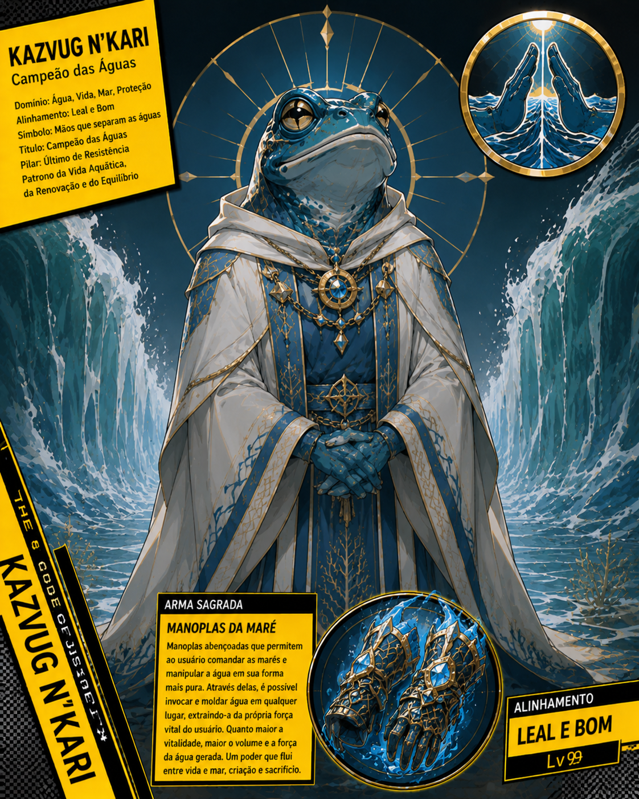

Registro principal
Base

Kazvug N'Kari
Conhecido como Campeão das Águas, Kazvug N'Kari governa os domínios da água, da vida, do mar e da proteção. De alinhamento leal e bom, sua presença se manifesta como uma maré firme e misericordiosa, separando caminhos impossíveis para preservar a vida e erguer resistência diante da destruição.
Seu símbolo são as Mãos que Separam as Águas, representação sagrada do equilíbrio entre força, fé e passagem segura. Reverenciado como Campeão das Águas, Kazvug N'Kari é patrono da vida aquática, da renovação e do equilíbrio, guiando aqueles que protegem os frágeis e aceitam o peso de defender o fluxo natural da existência.
Sua arma sagrada são as Manoplas da Maré, relíquias abençoadas que permitem comandar as marés e moldar a água em sua forma mais pura. Através delas, Kazvug N'Kari transforma vitalidade em correnteza, fazendo do mar uma defesa, uma cura e, quando necessário, uma força capaz de esmagar tudo que ameaça a vida.